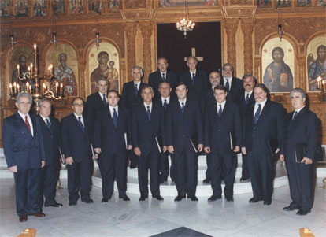

Χορωδία Δήμου Ηρακλείου / Heracleion City Choir
Ιδρυτής: Καθηγητής Γεώργιος Αμαργιαννάκης / Founded by Prof. Georgios Amargannakis

(image from ieropsaltis.com, click for original size)
Το υλικό (πληροφορίες και ηχογραφήσεις) για αυτή τη σελίδα προσέφερε ο Ευάγγελος
Λιναρδάκης, πρωτοψάλτης του Ι. Ν. Αγ. Βαρβάρας Ηρακλείου, υπέυθυνος ισοκρατημάτων
της χορωδίας.
Η χορωδία / About the choir
The choir was founded in 1986 by Georgios Amargiannakis, professor of Ethnomusicology
at the University of Athens. After his passing away, the choir is directed by Evangelos
Sourgiadakis, protopsaltis of the Church of Archangel Michael of Heracleion and
teacher of Byzantine Music.
Η Βυζαντινή χορωδία Δήμου Ηρακλείου ιδρύθηκε το 1986 από τον καθηγητή Εθνομουσικολογίας
κ. Γεώργιο Αμαργιαννάκη. Μετά την εκδημία του ιδρυτή της, τη χορωδία διευθύνει ο
Ευάγγελος Σουργιαδάκης, Πρωτοψάλτης του Ι. Ν. Αρχαγγέλου Μιχαήλ Ηρακλείου και καθηγητής
Βυζαντινής Μουσικής. Για περισσότερα στοιχεία και λίστα με τα μέλη της χορωδίας
δείτε το εξής [
jpg]
Περισσότερες πληροφορίες από το ieropsaltis.com [
htm] και από το analogion.net [
htm]
Βιογραφικό του ιδρυτή της χορωδίας, Γεωργίου Αμαργιαννάκη [
jpg]
Ηχογραφήσεις / Recordings
The choir published an LP with compositions of Georgios of Crete (mainly) in 1988. Five of
the tracks are available in the Files section of the forum Psaltologion [
html]
(offered by protopsaltis Vangelis Linardakis).
Η χορωδία εξέδωσε το 1988 δίσκο βινυλίου με έργα κυρίως του Γεωργίου του Κρητός. Πέντε
ηχογραφήσεις από αυτό το CD βρίκονται στα αρχεία του φόρουμ Ψαλτολόγιον [
html]
(προσφορά του πρωτοψάλτη Βαγγέλη Λιναρδάκη).
Great Supplicatory Canon to the Theotokos from 6 Aug 1992 at the Church of Megale
Panagia of Neapolis, Lasithi region. Officiated by Bishop Nektarios of Petra and
Heronesos. Celebrated by Fr. Evangelos Pachygiannakis. The choir is directed by
Georgios Amargiannakis.
Μεγάλη Παράκλησις: Ζωντανή ηχογράφηση της 6-8-1992 στον Ιερό Ναό Της Μεγάλης Παναγίας
Νεαπόλεως (νομός Λασηθίου) Κρήτης. Χοροστατεί ο Σεβασμιώτατος Μητροπολίτης Πέτρας
και Χερονήσσου κ. Νεκτάριος. Ιερουργεί ο μουσικολογιώτατος πρωτοπρεσβύτερος π. Ευάγγελος
Παχυγιαννάκης. Διευθύνει ο αείμνηστος Γιώργος Αμαργιαννάκης.
Μέρος / Part I [
mp3, 6.9 Mb]
Μέρος / Part II [
mp3, 6.5 Mb]
More recordings / Άλλες ηχογραφήσεις [
htm] (from ieropsaltis.com)
More recordings / Άλλες ηχογραφήσεις [
htm] (from analogion.net)
{kind=link}
{kind=link}
{kind=link}